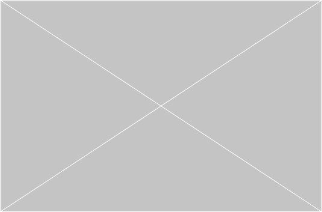

I’m passionate about real life people
and ethical design. Welcome to my portfolio.
I’m building this website myself, and it’s
still under construction. Feel free to look
around, and don’t hesitate to reach out if
you have any questions, comments or suggestions
on how I could build this even better.
What I do?
Here are some projects that I'm proud of

PriceRunner
Byke
FRISQ
Portfolio
This is about
Who am I?
Name:
Thumandi
Age:
27
Profession:
UX-designer
Location:
Stockholm, Sweden
I am a compassionate, multifaceted and social
Stockholm-based individual, who is always game
to try new things and connect with new people!
I have been active in events, fashion and in the
music industry, but have recently transferred to
studying UX-design. I have also been self employed
under a personal social media brand, and worked
actively with collaborations and content marketing.
If you want to know more about me, or get in touch, I
suggest yo uhead over to my linkedin page.
Feel free to reach out at any time.